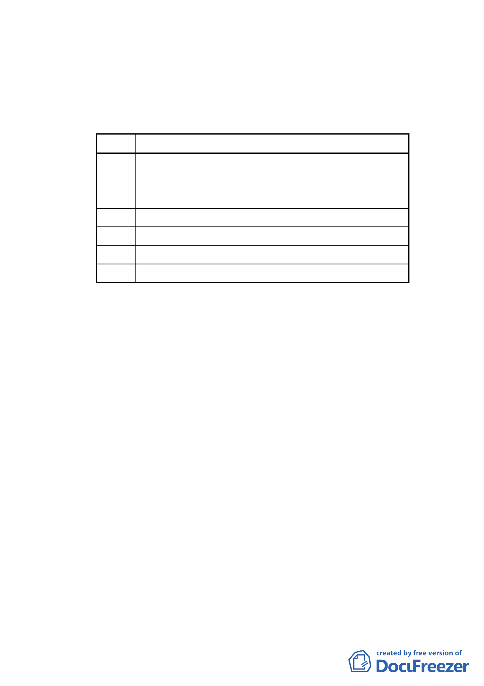

東至研究院路、南至忠孝東路、北至南港路。
計畫範圍與面積：分為 6 大區，面積約 37.42 公頃。
（二）計畫區現況：
1.基地現況：
編號
基地現況
A 臺電中心倉庫及玉成變電所用地及私有土地
B 臺鐵調車場、臺鐵回饋公園用地及國產實業、利百代
等私地
C 臺電修護處、中華電信南港機房用地及私有土地
D 瓶蓋工廠（現無使用）、交通轉運站及私有土地
E 原為國小預定地，現況為鐵路地下化工程施作工地
F 僑泰興及聯華食品工業使用及私有土地
2.公展計畫範圍內土地權屬：公有 39％、私有 61％。
（三）公展計畫土地使用變更內容：
1.玉成街以東至向陽路區域（編號 A、B 基地），配合北側工
業區與南側住宅區使用，變更為住商混合區。
2.編號 A 基地內原變電所用地北移。
3.向陽路以東至南港輪胎用地西側（編號 C 基地），變更為公
園用地，作為北部流行音樂中心發展腹地。
4.編號 D 基地及 F 基地，配合南港車站中心之發展，變更為
商業區。
5.編號 E 基地變更為轉運站用地。
四、專案小組審查意見：
經提 97 年 12 月 29 日第 589 次委員會議決議組成專案小組，
並召開 2 次專案小組會議、1 次討論會議以及 1 次現地會勘，
歷次會議審查意見如下：
（一）98 年 2 月 26 日第 1 次專案小組會議審查意見：
1.本案請市府依委員、議員與民眾所提意見，再作計畫內容
-9-